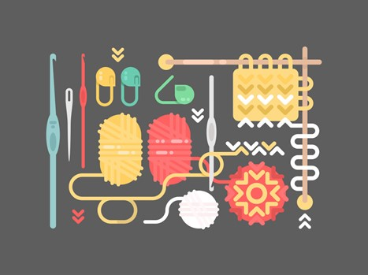

Привет незнакомец!
Эта страница посвящена моим хобби
Иностранные языки
Всю жизнь люблю учить разные языки.
На данный момент совершенствую английский.
Также немного знаю немецкий и французский.
Не так давно заинтересовал китайский и финский, как отличающиеся от других европейских языков.
В качестве очередного иностранного языка еще в школе меня заинтересовал HTML.
Ну и чтобы завершить свое растление
, решила пройти обучение всему этому более основательно и сформировать новые нейронные связи.
Музыка
Думаю, что все любят послушать приятную своему сердцу музыку.
Ну и я не исключение.
Рукоделие
Занятий для мозгов всегда хватало, но и руки не для скуки
.
Также я люблю вязать, вышивать, рисовать, шить и делать маникюр.